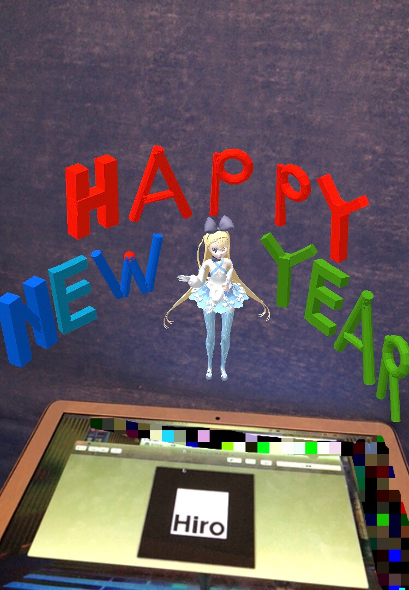

Unity
VR
2018年度のMACSで作った作品です。車を操作して、速度と位置によって左右の物体の色の見え方が変わる様子を見ます。
他にもUnityで、VR空間を移動したり物を降らせたり掴んだりといった基本的な動作は実装したことがあります。
unity1week
これまでに2回投稿しました。


AR
three.js
- AR年賀状 

2019年の年賀状で作ったものです。タイトルのリンクにアクセスし、下の画像(マーカー)にかざすと表示されます。
LINE
- ワードウルフGMBot
- LINE Clova スキル

Google Apps ScriptとLINEのAPIを使って作った、ワードウルフのゲームマスターをしてくれるBotです。
呼びかけると特定のテキストを話すスキルや、LINEにメッセージを送信するスキルなどを作成したことがあります。
GLSL
- 練習作品集
勉強中ですが、作ったものを載せています。
その他
- Excelを用いた浸水被害の予想

気象庁から出ている京都市の過去の降水量と京都市情報館の京都市域の浸水履歴のデータを、Excelを用いて回帰分析し、Cesium.jsを用いて可視化したものです。水色の面が赤い面より上にある地域は、浸水の危険性が高いという予想です。
ポートフォリオ
このサイトです。トップページの背景は、GLSLで描画しています。サイトデザインも自分で考えました。